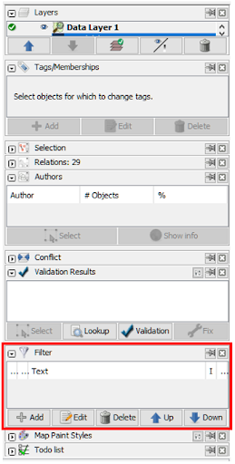
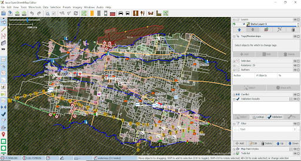
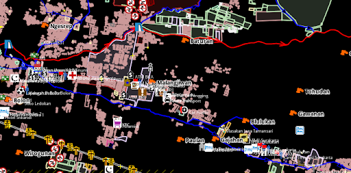
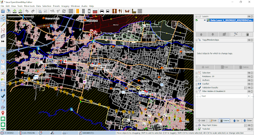

Menggunakan Alat Filter di JOSM
Download page as PDFTujuan Pembelajaran:
- Melakukan aktivasi mode penyaring data di JOSM
- Mengoperasikan alat untuk menyaring data di JOSM
JOSM memiliki berbagai macam alat yang dapat memudahkan penggunanya untuk melakukan pemetaan. Salah satu alat yang dapat digunakan adalah filter. Filter merupakan sebuah alat tambahan untuk memilih salah satu objek berdasarkan informasi (tag) objek di OpenStreetMap (key dan value), sehingga Anda dapat mengedit dan memeriksa data OSM berdasarkan informasi tertentu dari suatu objek. Filter juga memudahkan Anda untuk menampilkan dan melihat data berdasarkan informasi tertentu yang ingin Anda lihat. Hal ini sangat membantu ketika Anda ingin memeriksa data yang sangat banyak dan kompleks.
I. Mengaktifkan Jendela Filter di JOSM
Untuk dapat mengaktifkan jendela filter, silakan Anda pilih menu Window kemudian pilih Filter

Mengaktifkan jendela filter pada JOSM
Jendela filter akan ditampilkan di sebelah kanan layar Anda.

Jendela filter pada JOSM
II. Menggunakan Alat Filter di JOSM

Contoh data OpenStreetMap di Daerah Cengklik
Bayangkan jika Anda mempunyai data seperti gambar di atas. Seringkali tampilan data seperti gambar di atas tersebut terlihat membingungkan karena banyaknya data yang ditampilkan. Untuk itu Anda dapat menggunakan filter untuk menyederhanakan tampilan data tersebut dengan menampilkan objek-objek yang hanya ingin Anda lihat. Sebagai contoh, kita akan melakukan filter untuk objek jalan. Langkah-langkah yang perlu Anda lakukan adalah sebagai berikut:
Pada jendela filter, pilih menu Add.

Tombol Add di jendela filter
Pada bagian Filter string, silakan Anda masukkan informasi key dan value yang ingin Anda filter. Pada kasus ini, silakan Anda tulis highway=* (untuk memilih semua objek jalan yang ada). Kemudian pilih Submit filter.

Tampilan filter
Pada jendela filter Anda akan melihat tiga buah kotak yang dapat anda checklist.

Hasil filter
Jika Anda aktifkan kotak di angka 1, maka objek jalan akan disembunyikan namun terlihat pada layer peta dengan warna hitam pekat

Hasil filter 1
Jika Anda aktifkan kotak di angka 1 dan 2, maka objek jalan akan disembunyikan sepenuhnya dan tidak terlihat sama sekali di layer peta

Hasil filter 2
Jika Anda aktifkan kotak di angka 1, 2 dan 3, maka layer peta hanya akan menampilkan objek jalan di JOSM

Hasil filter 3
Perlu diingat bahwa ketika Anda menggunakan fungsi filter pada JOSM, hasil filter tersebut akan secara otomatis selalu muncul meskipun Anda sudah menutup software JOSM ataupun berpindah lokasi pada saat melakukan pemetaan. Hal ini dapat menimbulkan masalah karena jika Anda memetakan daerah lain dengan fungsi filter yang sama, objek jalan yang ada di daerah tersebut menjadi tidak terlihat dan bisa saja Anda petakan lagi, padahal jalan tersebut sudah dipetakan sebelumnya. Oleh karena itu, pastikan Anda menonaktifkan hasil filter terlebih dahulu setelah selesai menggunakan fungsi tersebut. Untuk melihat apakah fungsi filter masih aktif pada JOSM, Anda dapat melihat melihatnya pada bagian kanan atas bidang peta di JOSM. Jika tulisan Filter active masih muncul maka hal itu menandakan bahwa fungsi filter masih aktif.

Filter active yang menandakan fungsi filter masih aktif pada JOSM
Untuk menghapus filter yang masih aktif, silakan pilih hasil filter yang ingin Anda hapus di jendela filter, setelah itu pilih tombol Delete.

Pilih tombol Delete untuk menghapus hasil filter
Setelah Anda berhasil menghapus hasil filter tersebut, maka tampilan data OpenStreetMap Anda akan kembali seperti semula.

Tampilan Data OpenStreetMap setelah fungsi filter dihapus
Catatan : Saat Anda menggunakan fungsi filter pada JOSM, hasil filter tersebut akan selalu muncul pada saat Anda membuka JOSM. Pastikan Anda selalu menghapus fungsi filter setelah Anda menggunakannya!
RINGKASAN
Jika Anda telah berhasil mengikuti semua langkah-langkah yang ada, pada akhir modul ini Anda telah berhasil mengetahui apa itu mode filter atau mode penyaringan data di JOSM. Anda juga telah mampu mengoperasikan mode filter di JOSM untuk memilih data mana saja yang ingin Anda lihat. Silakan Anda gunakan filter untuk membantu proses pemetaan Anda supaya menjadi lebih mudah.